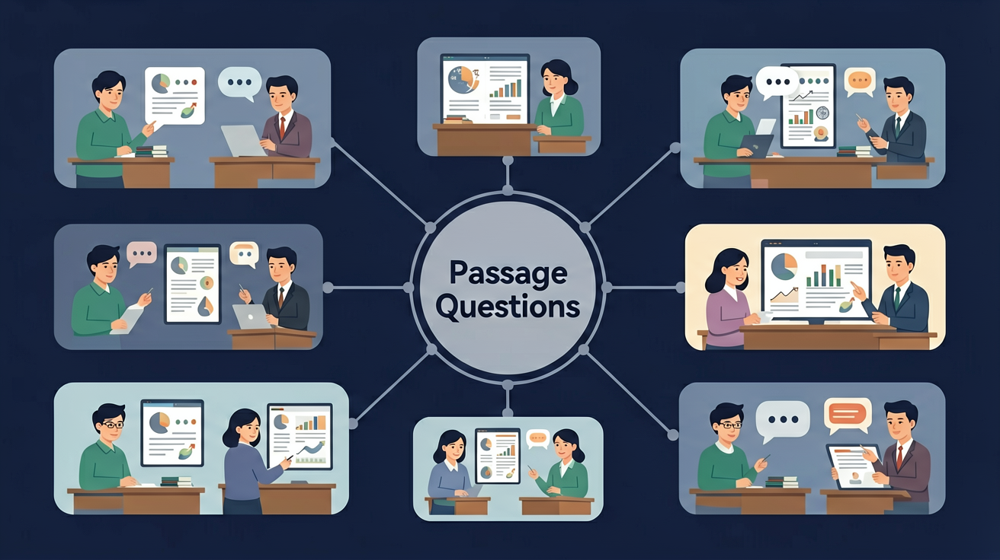

🌍 And（已知）：我们已经有了一定的基础知识
⚡ But（问题）：但还有一个重要概念需要深入理解
💡 Therefore（新知）：因此通过本节课的学习，我们将掌握新知识并能灵活运用

❓ 为什么文章里的小狗最后跑掉了？
❓ 作者写这个故事想告诉我们什么？
❓ 第三段那个生词‘suddenly’到底是什么意思？
学完这一课，这些问题你都能自信地回答。
And：学生能读懂简单英语短文
But：但找不到问题对应的句子
Therefore：教他们用关键词定位
关键句就像藏宝图上的红叉叉！比如问"What color is Lucy's bag?"时，快速扫描文章找"Lucy"和"bag"出现的句子。看这个例子："Lucy has a red bag and blue shoes."（数字提示：只要读1个包含关键词的句子就能答对）
🌍 就像妈妈让你从超市货架上找"草莓味酸奶"，你会直接看包装上画着草莓的瓶子，不用每瓶都打开尝。
文章说"Tom gets up at 7:00",问题问"When does Tom wake up?"该选哪个？
💡 常见错误往往就在细节中，仔细检查每一步！
Can you recall the key words or rules from this lesson?
Explain in your own words what you learned today.
Use today's knowledge to make a new sentence or example.
Compare this to something you already know. How are they similar or different? Can you create your own example?
观察中日童话书的封面设计差异
And：学生知道基础词汇
But：遇到生词就卡住
Therefore：教联系上下文猜词
生词就像拼图缺块，可以用周围图片补全！比如看到"The crocodile's scaly skin looks like fish scales."即使不认识"scaly"，通过"like fish scales"就能猜是"鳞状的"。重点看生词前后的解释（数字提示：约70%的生词可通过上下文破解）。
🌍 就像你不知道"拍立得"是什么，但听说"马上出照片的相机"就懂了。
文章说"Emma felt jubilant when she won the prize",jubilant的意思可能是？
And：学生能理解字面意思
But：容易掉入陷阱选项
Therefore：教对比文章细节
当侦探抓小偷要对比证据！比如文章说"There are 3 apples in the basket"但选项说"4 apples"就是错的，就算其他单词都一样。特别注意数字、颜色、否定词（not/no）这些陷阱高发区（数字提示：90%的错误选项会改动1-2个词）。
🌍 就像妈妈说要买"圆形小西瓜"，如果超市只有椭圆形大西瓜就不能买。
文章说"The library opens at 9am",哪个选项错误？
把文章分成‘开头-经过-结尾’三部分
用彩色笔标出时间、地点、人物关键信息
对比插图内容和文字描述是否一致
想象自己就是故事里的小主人公
如果故事发生在夏天会有什么不同？
先独立作答，再点选项查看对错与错因。
The book cover shows a girl wearing traditional Korean hanbok holding a lantern. This most likely means the story happens during:
If the author writes 'The little fox probably got lost in the big forest', which word shows this is a guess?
The passage says 'Over 50 children joined the reading club last month.' What can we know for sure?
The notice says 'Return books ____ 2 weeks'. The missing word means 'within' (根据提示补全图书馆告示)
答案：within
within表示时间范围内
According to the rules, readers should keep ____ in the library. (用文中的'quiet'适当形式填空)
答案：quiet
保持安静需用形容词原级
✅ 用不同颜色标注对话和叙述
💡 混淆直接引用和转述
✅ 先画出生词前后3句话猜意思
💡 缺乏上下文意识
口诀：谁在哪里干什么，三步读懂小文章
类比：读文章就像吃三明治，开头结尾是面包，中间馅料最丰富